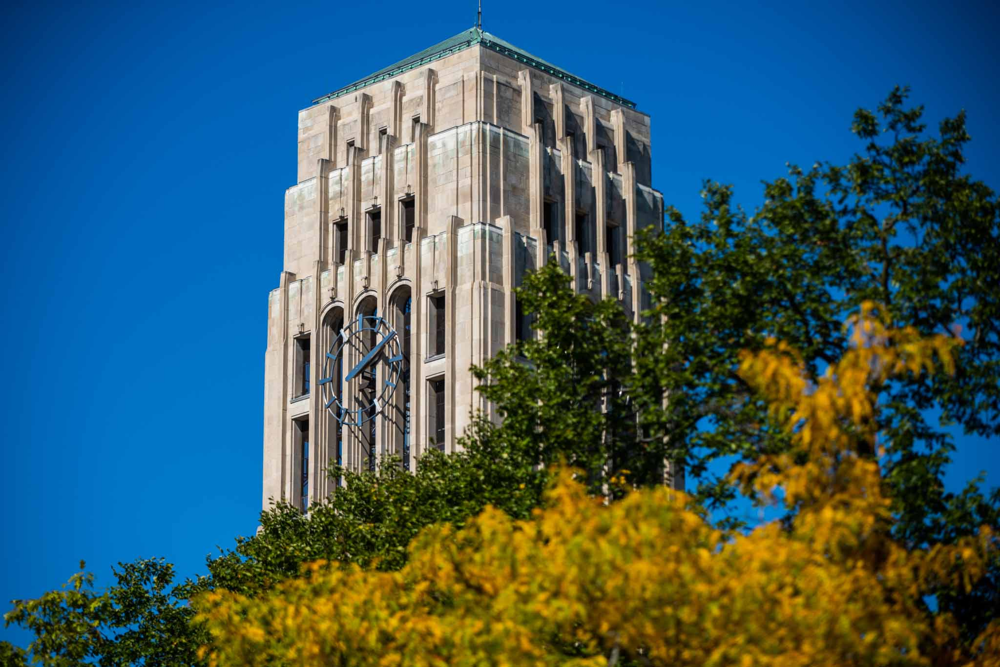

This page is designed to help you build your community within the School of Information. Feel free to utilize all the resources available here!
Physical Health
Maintaining physical health is essential for academic success. The University of Michigan offers numerous resources to help you stay in top shape:
University Health Service (UHS)

University Health Service (UHS) at the University of Michigan is a vital component of the campus community, dedicated to promoting and maintaining the health and well-being of students, faculty, and staff. UHS offers a comprehensive range of services including primary care, mental health counseling, immunizations, and health education programs. With a team of skilled medical professionals and modern facilities, UHS ensures that members of the university community have access to high-quality healthcare tailored to their individual needs. Their commitment to proactive health measures, wellness programs, and accessible care makes it a cornerstone of the university's efforts to foster a healthy and supportive academic environment. Whether it's routine check-ups or urgent care, UHS provides essential support to help individuals thrive during their time at the university.
Recreational Sports
Recreational Sports at the University of Michigan provides students, faculty, and staff with a diverse array of opportunities to engage in physical activity, fostering a sense of community and well-being across campus. With state-of-the-art facilities, including fitness centers, swimming pools, and sports fields, participants can enjoy a wide range of activities such as intramural sports, group exercise classes, and outdoor adventures. Rec Sports encourages individuals of all skill levels to stay active and connect with others through structured and informal programs, promoting both physical health and mental wellness. The department prioritizes inclusivity and accessibility, ensuring that everyone can find a suitable outlet for achieving their fitness goals and pursuing a balanced lifestyle. By nurturing a vibrant culture of active living, Recreational Sports plays a crucial role in enhancing the overall student experience and fostering lifelong habits of health and fitness.
Mental Health
Prioritizing mental well-being is crucial for success. Here are some support resources available to you:
Counseling and Psychological Services (CAPS)
Access individual counseling, group therapy, workshops, and crisis intervention services.
Wellness Coaching
Work with a wellness coach to develop strategies for stress management and well-being.
Mindfulness Resources
Engage in mindfulness and meditation sessions to improve focus and relaxation.
Life Outside the Classroom
Balance is key! Here are some ways to stay engaged outside of academics:
Student Organizations: Connect with peers through student-run clubs.
Arts & Culture: Enjoy exhibitions, performances, and cultural events.
Career Services: Access career counseling, job search resources, and networking opportunities.
Community Engagement: Participate in volunteering and service projects.
Housing & Dining: Find information on on-campus living and dining options.